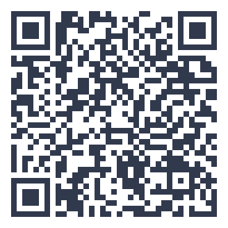

thuisitaliaans.com/esercizi/espressioni-di-viaggio-avanzate.html
Espressioni di viaggio avanzate
Gira le carte per scoprire espressioni di viaggio più avanzate.
Cosa contiene questo esercizio
«Espressioni di viaggio avanzate» è un esercizio di italiano di livello B1 con 4 parole, tra cui fare tappa, andare fuori rotta e avere il jet lag. Qui sotto trovi tutto il contenuto in chiaro: puoi leggerlo prima di provare, oppure usarlo per correggerti dopo.
Parole e definizioni di questo esercizio (4)
- Fare tappa
- Fermarsi in un luogo durante un viaggio più lungo
- Andare fuori rotta
- Deviare dal percorso previsto
- Viaggiare con lo zaino in spalla
- Viaggiare in modo economico e avventuroso
- Avere il jet lag
- Sentirsi stanchi per il cambio di fuso orario
Lessico avanzato dei viaggi
Espressioni più sofisticate per parlare di viaggi ed esperienze all'estero.
Padroneggiare questo argomento ti aiuta a affrontare conversazioni più articolate e argomentare le tue opinioni. Questo esercizio allena il lessico dei viaggi e della cultura italiana, perfetto per chi visita o vive in Italia.
Questo argomento fa parte del livello intermedio del QCER, la soglia in cui si inizia a comunicare con reale autonomia in italiano.
Ripeti le carte più volte nei giorni successivi, anche a distanza di qualche giorno: la ripetizione distanziata nel tempo è uno dei metodi più efficaci per fissare il lessico nella memoria a lungo termine.
Le espressioni di viaggio rendono il racconto più vivido
Raccontami i tuoi viaggi usando queste espressioni naturali.
Prenota la prova gratuita →


iOS App Store — Valutazione cinque stelle su iOS App Store
Venti minuti al giorno, sul telefono
Con l'app Ti: percorso A1–C2, 25 romanzi graduati, edicola tematica e dizionario in 14 lingue.
Scopri l'app Ti →Approfondisci con il blog: cultura italiana

{kind=link}